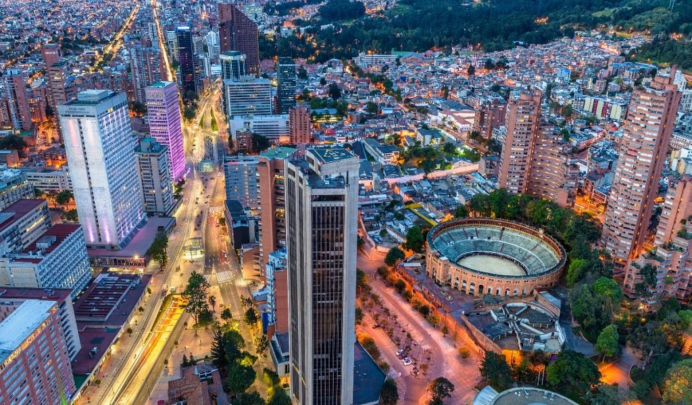
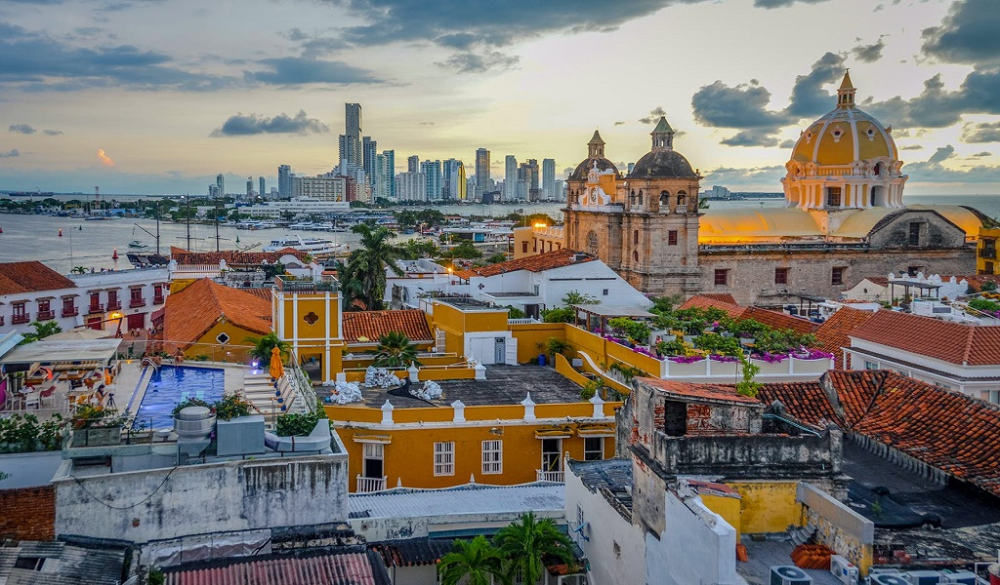
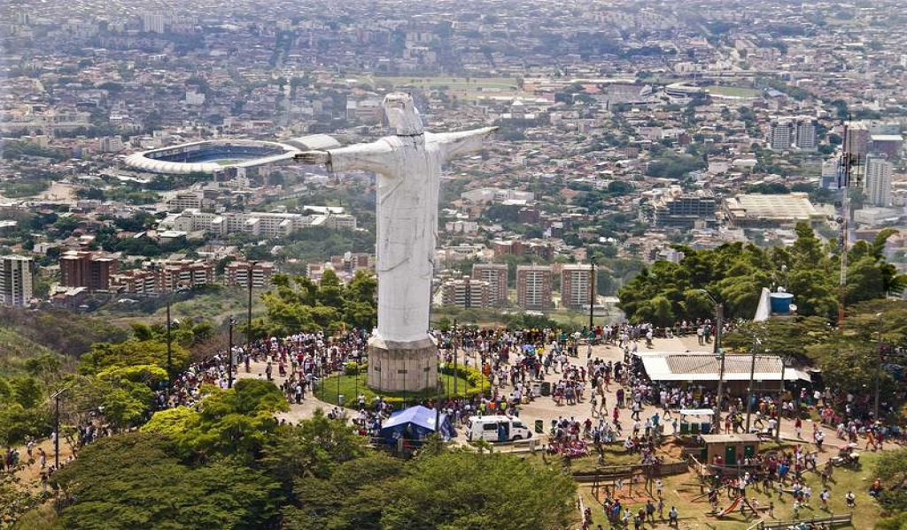
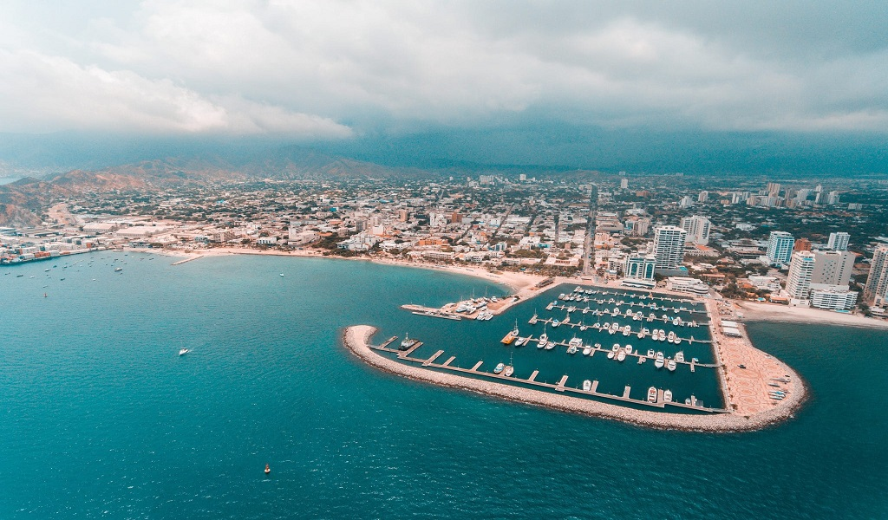

Principales ciudades
Colombia cuenta con 32 departamentos que albergan 1118 ciudades en total, en este apartado les contaremos las 5 mas importantes:
- Bogota.
- Medellin.
- Cartagena.
- Cali.
- Santa Marta.
Cada uno de estas con un particular sobrenombre adquirido por sus distintivas y respectivas caracteristicas:
- Bogota:
- La atenas suramericana.

Es la capital y por lo tanto la mas importante de Colombia, pertenece al departamento de Cundinamarca, tiene una extension de 1.636 km2 y cuenta con una poblacion de 7,181 millones de habitantes.
- Medellin:
- La ciudad de la eterna primavera.

Pertenece al departamento de Antioquia, tiene una extension de 382 km2 y cuenta con una poblacion de 2.569 millones de habitantes.
- Cartagena:
- La ciudad heroica.

Pertenece al departamento de Bolivar, tiene una extension de 585,1 km2 y cuenta con una poblacion de 213.943 habitantes.
- Cali:
- La sucursal del cielo.

Pertenece al departamento de Valle del Cauca, tiene una extension de 619 km2 y cuenta con una poblacion de 2.228 millones de habitantes.
- Santa Marta:
- La perla de america.

Pertenece al departamento de Magdalena, tiene una extension de 2.393 km2 y cuenta con una poblacion de 499.192 habitantes.
| Ciudad |
Extension |
Poblacion |
| Bogota |
16.636 km2 |
7.181 millones |
| Medellin |
382 km2 |
2.569 millones |
| Cartagena |
585.1 km2 |
213.943 |
| Cali |
619 km2 |
2.228 millones |
| Santa Marta |
2.393 km2 |
499.192 |
Inicio. | Gastronomia Colombiana. | Contacta con nosotros.
Copyright © 2023 Nicolas Alejandro Rivera Sotomonte.